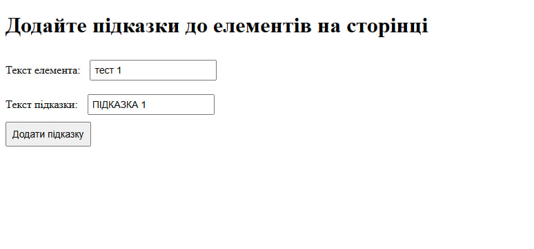
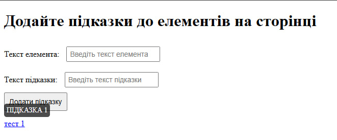

Програмний код
task5.html
<!DOCTYPE html>
<html lang="en">
<head>
<meta charset="UTF-8">
<meta name="viewport" content="width=device-width, initial-scale=1.0">
<title>Спливаючі підказки</title>
<link rel="stylesheet" href="style.css">
</head>
<body>
<h1>Додайте підказки до елементів на сторінці</h1>
<div>
<label for="elementText">Текст елемента:</label>
<input type="text" id="elementText" placeholder="Введіть текст елемента" />
</div>
<div>
<label for="tooltipText">Текст підказки:</label>
<input type="text" id="tooltipText" placeholder="Введіть текст підказки" />
</div>
<button onclick="createTooltip()">Додати підказку</button>
<div id="content"></div>
<div class="tooltip"></div>
<script src="script.js"></script>
</body>
</html>
style.css
/* Стилі для спливаючої підказки */
.tooltip {
position: absolute;
background-color: rgba(0, 0, 0, 0.7);
color: white;
padding: 5px;
border-radius: 5px;
font-size: 14px;
display: none; /* За замовчуванням підказка схована */
}
/* Стилі для тексту з підказками */
.tooltip-target {
cursor: pointer;
color: blue;
text-decoration: underline;
}
/* Стиль для полів вводу та кнопки */
input {
margin: 10px;
padding: 5px;
font-size: 14px;
}
button {
padding: 8px;
font-size: 14px;
cursor: pointer;
}
script.js
// Функція для прив'язки підказки до елемента
function attachTooltip() {
// Отримуємо всі елементи, до яких прив'язані підказки
const tooltipTargets = document.querySelectorAll('.tooltip-target');
// Отримуємо сам елемент підказки
const tooltipElement = document.querySelector('.tooltip');
// Перебираємо всі елементи, до яких буде прив'язана підказка
tooltipTargets.forEach(target => {
// Додаємо обробник події на наведення миші
target.addEventListener('mouseover', function(event) {
// Отримуємо текст підказки з атрибута data-tooltip елемента
const tooltipText = target.getAttribute('data-tooltip');
// Встановлюємо текст підказки
tooltipElement.textContent = tooltipText;
// Отримуємо координати елемента на сторінці
const rect = target.getBoundingClientRect();
// Встановлюємо позицію підказки (зліва і зверху)
tooltipElement.style.left = `${rect.left + window.scrollX}px`;
tooltipElement.style.top = `${rect.top + window.scrollY - 30}px`;
// Показуємо підказку
tooltipElement.style.display = 'block';
});
// Додаємо обробник події на відведення миші
target.addEventListener('mouseout', function() {
// Ховаємо підказку, коли миша залишає елемент
tooltipElement.style.display = 'none';
});
});
}
// Функція для створення нової підказки
function createTooltip() {
// Отримуємо введений текст елемента
const elementText = document.getElementById('elementText').value;
// Отримуємо введений текст підказки
const tooltipText = document.getElementById('tooltipText').value;
// Перевіряємо, чи обидва поля не порожні
if (elementText && tooltipText) {
// Створюємо новий параграф для нового елемента
const newElement = document.createElement('p');
// Додаємо клас для прив'язки підказки
newElement.classList.add('tooltip-target');
// Встановлюємо атрибут data-tooltip для підказки
newElement.setAttribute('data-tooltip', tooltipText);
// Встановлюємо текст нового елемента
newElement.textContent = elementText;
// Додаємо новий елемент в розділ контенту
document.getElementById('content').appendChild(newElement);
// Очищаємо поля вводу після додавання нового елемента
document.getElementById('elementText').value = '';
document.getElementById('tooltipText').value = '';
// Повторно прив'язуємо підказки до всіх елементів, щоб нові елементи теж працювали
attachTooltip();
} else {
// Якщо поля не заповнені, вивести повідомлення
alert('Будь ласка, заповніть обидва поля!');
}
}
// Ініціалізація функції при завантаженні сторінки, щоб прив'язати підказки до існуючих елементів
window.onload = attachTooltip;
Скріншот виконання
 